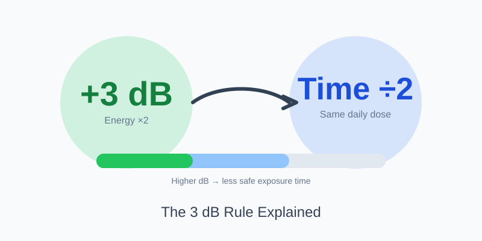

The 3 dB Rule Explained: Safe Exposure Time Made Simple
Updated Mar 12, 2026 • 12 min read
People often ask, “Is 85 dB safe?” The better question is: safe for how long? Noise risk is about daily dose. If you double how loud it is, you can’t keep the same exposure time. The 3 dB rule is the shortest, most useful mental model for that trade-off.
The 3 dB Rule in One Sentence
Every +3 dB doubles sound energy, so safe exposure time is cut in half.
That’s it. Once you internalize this, you stop making “one-number” decisions and start making time-aware decisions: earplugs now, a break later, or step away from the speaker.
If you want to measure your environment first, use the Online Sound Meter. Focus on averages over 60 seconds, not a one-second snapshot.
Why 3 dB Matters (Even Though It Doesn’t Feel “Twice as Loud”)
A common misunderstanding is thinking that “double the loudness” equals “double the risk.” Human perception and physical energy don’t scale the same way. Roughly speaking, +10 dB can feel like a doubling of loudness to many people. But physically, +3 dB is already double the acoustic energy. Hearing damage risk is tied more closely to energy dose over time than to your subjective feeling.
This explains why “only a little louder” can be a big deal. A shop that creeps from 85 dB to 88 dB might not feel dramatically louder, but your safe time drops by half under the 3 dB model.
NIOSH vs OSHA: Two Common Standards You’ll See
In noise safety conversations, you’ll often see both NIOSH and OSHA mentioned. Without turning this into a compliance debate, here’s the practical takeaway:
- NIOSH uses a 3 dB exchange rate (more conservative, energy-based).
- OSHA uses a 5 dB exchange rate in many contexts (less conservative).
This article focuses on the 3 dB approach because it’s easier to reason about and encourages safer decisions. For workplace compliance requirements, always follow the rules that apply to your situation and use certified instruments for official measurements.
A Practical Exposure Time Table (3 dB Rule)
The starting point you’ll see widely is 85 dBA for 8 hours (as a reference). Then every +3 dB halves the time.
| Average Level (dBA) | Approx. “Safe” Time (3 dB rule) | Real-world example |
|---|---|---|
| 85 | 8 hours | Busy office / light workshop |
| 88 | 4 hours | Loud traffic near curb |
| 91 | 2 hours | Power tools in a garage |
| 94 | 1 hour | Loud restaurant / bar |
| 97 | 30 minutes | Gym class / loud subway |
| 100 | 15 minutes | Loud concert area |
| 103 | 7.5 minutes | Very close to speakers |
How to Use the 3 dB Rule in Real Life
1) Think in “daily dose buckets”
Your day is a mix of quiet and loud. The 3 dB rule is powerful because it lets you combine exposures mentally. For example, if you spend 1 hour at 94 dBA (about a full dose at that level), you shouldn’t add several more hours at similar levels without protection.
2) Use distance as your first “volume knob”
In many environments (concerts, gyms, noisy streets), the easiest way to reduce dose is not to “tough it out,” but to change distance and orientation. A small move away from a speaker cluster can shift you from “minutes matter” back into “hours are possible.”
3) Use breaks strategically
A useful pattern is loud task → quiet break. If your workplace or hobby involves intermittent noise, place quiet periods right after the loudest sections. This doesn’t erase exposure, but it prevents a continuous high-dose block and reduces fatigue.
4) Protect the “high-risk minutes”
Many people skip earplugs because they plan to be somewhere loud for “only a bit.” That’s exactly when protection matters. At 100 dBA, your safe time is around 15 minutes under the 3 dB model. If you’re not sure, treat it as high-risk and use protection.
Common Mistakes (and Better Alternatives)
- Mistake: using max dB for decisions. Better: use 60-second averages and context notes.
- Mistake: trusting one device reading as exact. Better: treat it as reference-only and measure consistently.
- Mistake: assuming “it doesn’t hurt” means it’s safe. Better: rely on exposure time logic, not discomfort.
Practical Next Steps
If you’re doing headphone listening, start with our safety guide and apply the 3 dB logic to long sessions: How Loud Is Too Loud?.
If you want a structured approach for work, including documentation and controls, see: Is My Workplace Too Loud?.